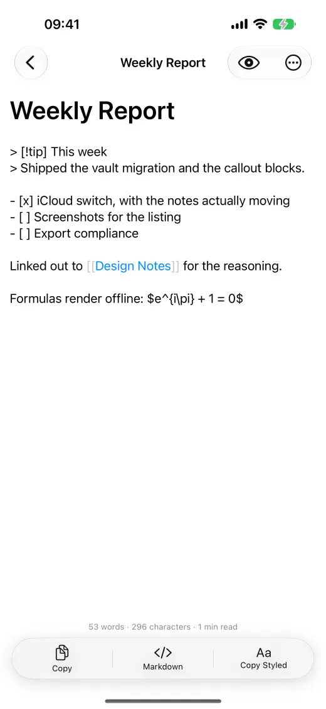

Markdown writing · iPhone
Inkstone Notes keeps your Markdown notes as files
Every note is an ordinary .md file in iCloud Drive, so you can open the same folder on a Mac or in another editor. Inkstone adds a focused native writing surface without locking your notes in a database.
Real product screen
Inside the app

File ownership
Your notes remain plain Markdown
A folder of .md files is the source of truth. Open it from Finder on a Mac, edit with another app or move it without a proprietary export step.
Use [[note title]] links, backlinks and rename-aware links to navigate a growing collection.
Syntax highlighting, live preview, outlines, inline tags, daily notes and full-text search stay close to the editor.
Copy with one of eight typesetting styles or export PDF and HTML with embedded images.
Connected writing
Keep an index, notes and tasks connected
A project can have an overview, separate meeting notes and a daily log. Link the notes together while keeping each one as an ordinary Markdown file.
Write the project's purpose in an index note and add links such as [[Meeting Notes]] and [[Tasks]]. An unwritten link can become a new note; backlinks show which notes point to the one you are reading.
Keep decisions in meeting notes, dated progress in daily notes and checklists in task notes. Tick tasks in the preview, follow the outline or use full-text search when the collection grows.
Use the .md files when another person or editor needs the source. For readers who need a finished document, copy styled rich text or export PDF or HTML with images included.
Offline rendering
Formulas and diagrams without a web service
KaTeX and Mermaid are bundled for local rendering. The App Store privacy label says the developer does not collect data from this app.
Inkstone is an iPhone app requiring iOS 18.0 or later; the interface is available in English and Simplified Chinese.
Version 1.0.1 fixes exported PDFs so the file is named after the note and includes pictures from the note. The same release improves editing responsiveness in notes with large photos.
The US App Store lists Version 1.0.1 at $0.99 with an 8.7 MB download size, checked on 3 October 2026. Price and download size may vary by storefront.
Common questions
Before you download
Are Inkstone notes locked in its own database?
No. Notes are ordinary Markdown files in an iCloud Drive folder that can be opened or edited by other tools.
Can I use Inkstone's editor on a Mac?
The current App Store listing is for iPhone. You can access the same Markdown files on a Mac through iCloud Drive and edit them with another app.
Do formulas and diagrams need an internet connection?
KaTeX and Mermaid are bundled and render locally. Availability and syncing of the note files themselves depend on iCloud Drive, your device settings and your connection.
Which format should I use to share a note?
Share the Markdown file when the recipient wants editable source. Copy rich text for a publishing composer, or export PDF or HTML for a formatted document. Version 1.0.1 fixes PDF filenames and the inclusion of pictures.